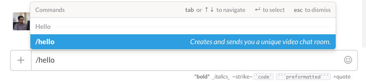
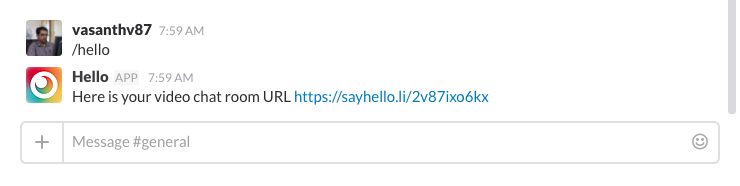

Hello - Slack Integration
Hello can be used directly from your Slack channel, use /hello command to create a Hello room from within the Slack.
Add Hello to your team
Add Hello Slack app to your slack team, by clicking the below button.

Video confenrence from Slack
Once you authorize the app, it will be added to your team. Now you can use /hello command from inside your team (in Channels/DM) to create video confenrence rooms.

You will get an instant message with the confenrence room URL. Now you and your peers can just click the URL and start the video confenrence.

If you have any questions or queries with our web app, you can contact me through twitter @vsnthv.